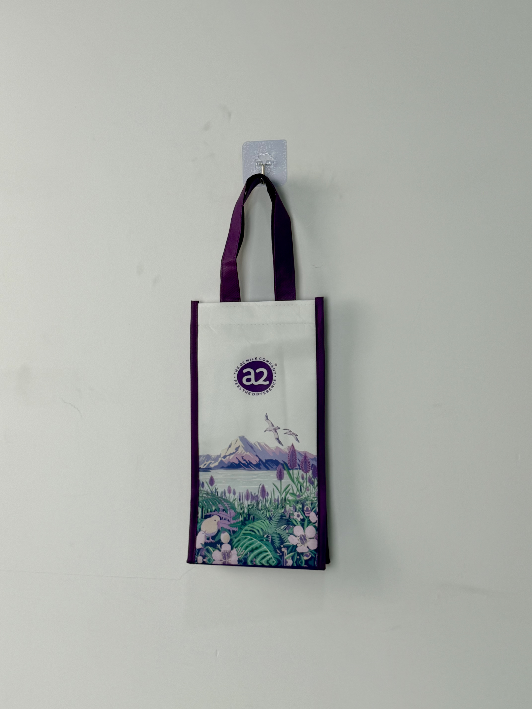

A premium non-woven insulated tote bag designed for The a2 Milk Company, combining natural landscape artwork with consistent brand identity to create a memorable customer touchpoint.

The a2 Milk Company is a premium dairy nutrition brand originating from New Zealand, recognized globally for its A2 protein milk products. With a brand philosophy centered on purity, natural origin, and scientific nutrition, the company needed a promotional packaging solution that would resonate with health-conscious parents while reinforcing its clean, natural image at retail touchpoints and promotional events.
The packaging had to feel like an extension of the New Zealand landscape itself — clean, pure, and instantly recognizable as a2.
Unlike standard promotional bags, this project required a dual-function approach: the bag needed to serve as practical insulated packaging for dairy product samples while simultaneously acting as a premium brand ambassador that customers would reuse in daily life.
The design direction drew direct inspiration from the brand's New Zealand heritage. The artwork features a layered natural landscape — snow-capped mountains, native birds in flight, lavender fields, and pastoral sheep grazing — all rendered in a soft, illustrative style that aligns with a2's premium yet approachable market positioning.
Deep purple handles and binding tape match a2's corporate color palette for instant brand recognition.
Custom full-color print depicting New Zealand's natural scenery reinforces the brand's origin story.
The circular a2 logo is positioned at upper-center for immediate visibility while maintaining design balance.
Matte laminated surface provides water resistance and a tactile quality that elevates perceived value.
Every parameter was optimized for insulation performance, structural durability, and print fidelity. The three-layer construction maintains internal temperature for up to 4 hours, making it ideal for dairy product transport and picnic use.
| Parameter | Specification | Test Standard |
|---|---|---|
| Load Capacity | 5 kg | ASTM D5265 |
| Thermal Retention | 4 hours at 5°C delta | Internal Protocol |
| Color Fastness | Grade 4-5 | ISO 105-B02 |
| Seam Strength | > 25 N/cm | ASTM D1683 |
Production followed a rigorous six-stage workflow to ensure color accuracy, seam integrity, and consistent insulation performance across the entire order quantity. Each stage included inline quality checks to prevent defects from propagating downstream.
Color separation and dot-gain compensation optimized for non-woven substrate. Pantone matching for brand purple confirmed via physical swatch.
Roll-to-roll gravure printing on 80gsm non-woven PP. Inline drying at 120°C ensures ink adhesion and prevents smearing on lamination line.
Matte BOPP film laminated to printed face. 3mm PE foam bonded to aluminum foil backing layer in a single heat-compression pass.
Ultrasonic die-cutting ensures sealed edges that prevent fraying. Handles slit from woven PP tape rolls with automated length control.
Double-needle stitching at 8 stitches per cm. Handle attachments reinforced with box-X stitching pattern for 5kg load rating.
100% visual inspection for print defects and seam integrity. Flat-packed in master cartons with moisture-barrier polyethylene liners.
The cooler bag was deployed across a2's retail network in China and Southeast Asia as both a purchase-with-purchase promotional item and a gift-with-purchase incentive for premium product bundles. Post-campaign analysis revealed strong consumer engagement metrics tied directly to the packaging experience.
Key Insight: Consumers frequently photographed the bag for social media sharing, generating organic brand impressions at zero incremental media cost. The natural landscape design proved particularly effective during spring and summer campaign periods.
Beyond promotional use, the bag's practical insulation function encouraged sustained reuse for grocery shopping, picnics, and baby formula transport — extending brand exposure far beyond the initial point of sale. This dual utility transformed a single-use promotional item into a long-term brand touchpoint.
Three structural decisions differentiate this case from typical promotional bag production. Each decision addresses a specific tension between brand marketing goals and manufacturing constraints.
The tall, narrow format (22 x 12 x 28 cm) was chosen specifically to accommodate standard milk powder tins upright without tipping. This seemingly minor dimensional choice significantly improved user experience and reduced product damage returns.
Using illustrated rather than photographic landscape artwork allowed precise color control across print batches and avoided the uncanny valley effect that sometimes occurs when product photography is printed on flexible substrates.
The woven PP tape handles in brand purple serve a dual purpose: they reinforce color identity while hiding soil accumulation better than white or light-colored alternatives — a practical consideration for reusable bags.
We manufacture premium custom bags for dairy, food, and retail brands worldwide. From concept to delivery, our team handles design, sampling, and full-scale production.